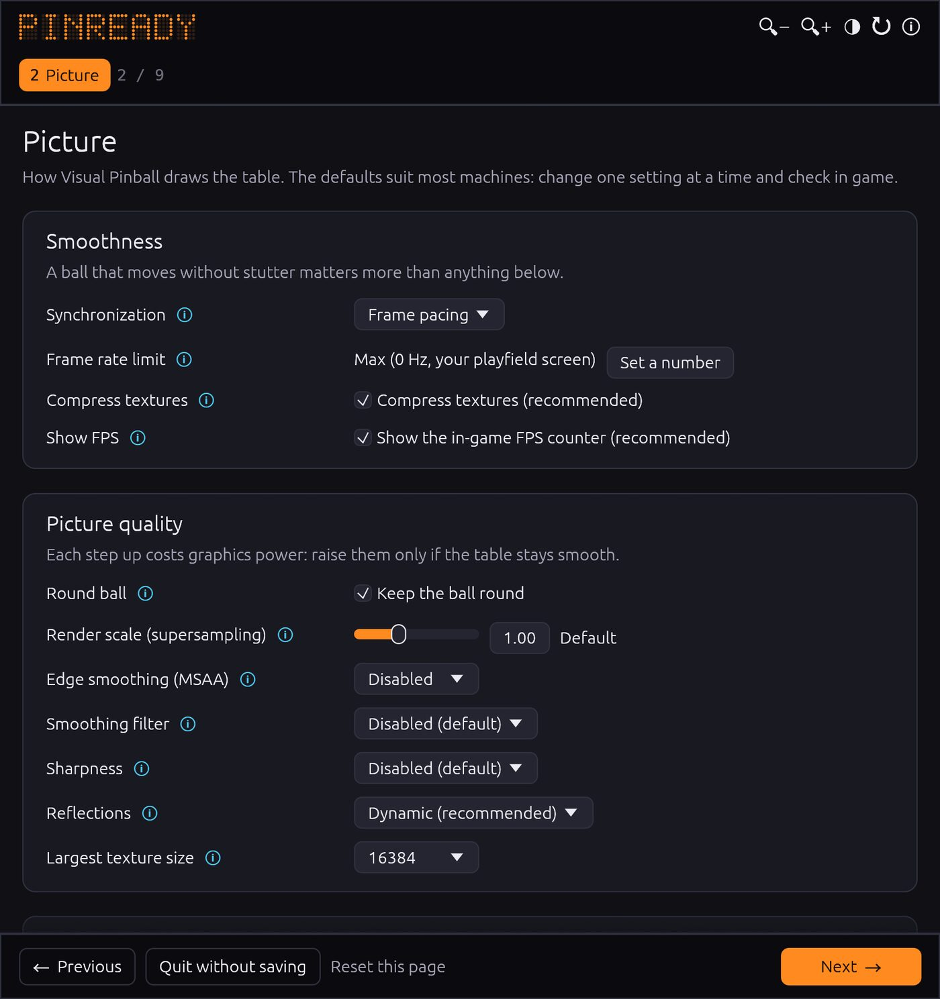

Installationsguiden
Första gången du startar PinReady leder en guide dig genom nio sidor. Varje alternativ har en liten infomarkering: håll muspekaren över den, eller klicka på den i en pincab, för en förklaring med vanliga ord.
Dina svar skrivs till VPinballX.ini, Visual Pinballs inställningsfil, och kommentarerna i filen bevaras. Om filen inte finns än låter PinReady först Visual Pinball skapa sin kompletta standardfil och lägger sedan till dina val i den. Du kan öppna guiden igen när som helst med knappen Konfiguration i startaren eller med pinready --config: varje fält visar dina nuvarande inställningar. De flesta inställningar kan också ändras under spelets gång, från Visual Pinball-menyn på F12.
Återställ konfigurationen kastar alla svar, sparar den globala VPinballX.ini som VPinballX.ini.reset-backup och börjar om på sida ett. Dina bord lämnas ifred.
1. Skärmar

Den första sidan visar det upptäckta systemet (till exempel Ubuntu 24.04 LTS · X11 · GNOME) så att felrapporter alltid har sitt sammanhang, låter dig välja gränssnittsspråk och installerar Visual Pinball vid behov.
- Antal skärmar: 1 för en vanlig dator, 3 eller 4 för en komplett pincab (spelplan, backglass, DMD och en valfri topper).
- Roller: varje bildskärm visas med namn, upplösning, uppdateringsfrekvens (Hz) och fysisk storlek. PinReady föreslår en roll utifrån skärmstorleken: den största blir spelplan, sedan backglass, DMD och topper. Ändra vilken roll som helst i listan, eller sätt en skärm till Oanvänd.
- Visningsläge: Skrivbord (i fönster, för en vanlig dator), Skåp (spelplanen ritad för en liggande skärm, backglass och DMD på egna skärmar) eller Hel enskild skärm (spelplan och backglass på en hög skärm). Det växlar till Skåp när du har 2 skärmar eller fler, och du kan fortfarande ändra det.
- Extern DMD-enhet (ZeDMD, PinDMD…): kryssa i den om du har en fysisk poängskärm; Visual Pinball hittar den när ett bord startar.
- Inaktivera pekskärm: stänger av pekskärmsöverlägget i VPX, användbart när spelplanen inte är en pekskärm eller när du styr skåpet på distans.
- Skåpets mått: lockbar-bredd och -höjd, spelplanens lutning, din längd och var du står. Dra i handtagen på ritningen eller skriv in värdena; de ger 3D-vyn rätt perspektiv.
2. Bild

Grafikinställningar för spelplanen. Sidans råd: börja med standardvärdena och justera sedan efter din maskin.
- Synkronisering: Ingen synk, Vertikal synk, Adaptiv synk eller Frame pacing, som är Visual Pinballs standard. Varje val förklarar sin avvägning mellan jämnhet och fördröjning av inmatning.
- FPS-gräns: Max som standard, vilket följer uppdateringsfrekvensen på din spelplansskärm så att ingen bild ritas snabbare än skärmen kan visa den. Tryck på Välj ett tal för att ange en egen gräns. Om din skärm klarar mer än vad sidan visar, ställ först in dess uppdateringsfrekvens i systemets skärminställningar (PinReady kan inte ändra den) och kom sedan tillbaka.
- Komprimera texturer (på som standard) packar bordets bilder så att de tar mindre grafikminne, till priset av en något längre första laddning av varje bord.
- Bildkvalitet: supersampling, MSAA, kantutjämning i efterbehandling (FXAA med flera), skärpning, reflektioner och maximal texturstorlek.
- Visa FPS (på som standard) visar en bildräknare i spelet, bra för att kontrollera dina inställningar direkt efter installationen.
- Rund boll (på som standard) hindrar bollen från att se lite äggformad ut när den rör sig snabbt. Rent kosmetiskt.
- Visuella effekter: mjuka skuggor (ambient occlusion), sken kring starka lampor, rörelseoskärpa på bollen, skarpare texturer i sned vinkel, reflektioner över hela bordet, förrenderade bilder samt mjukhet hos boll och ramper. Varje effekt visar det rekommenderade värdet; om ett spel hackar, stäng först av dem längst ned i listan.
3. 3D

Två valfria block, båda avstängda som standard eftersom ett skåp inte behöver dem.
- Virtuell verklighet (VR): spela i ett headset. Du behöver ett headset och ett VR-program (en OpenXR-runtime som SteamVR eller Monado) som körs på datorn. När det är aktiverat väljer du när VR startar, headsetets uppdateringsfrekvens, vad skrivbordet visar under tiden och ljudrouting.
- Stereoskopisk 3D: en 3D-bild för en 3D-tv eller 3D-glasögon. När det är aktiverat väljer du 3D-format och justerar ögonavstånd, ljusstyrka och färgmättnad.
4. Kontroller

Varje åtgärd i Visual Pinball har två kolumner, Tangentbord och Joystick, och båda fungerar sida vid sida. Klicka på Tilldela och tryck på en tangent eller en knapp: en tangent fyller tangentbordskolumnen, en joystickknapp joystickkolumnen. Tilldela alla automatiskt går igenom varje åtgärd i ett svep. Viktiga åtgärder (flippers, MagnaSave, start, credit, skjut ut boll…) visas först; avancerade ligger ett klick bort. PinReady varnar dig när en tangent redan används av en annan åtgärd.
Flipperkontrollkort. När ett Pinscape KL25Z-, Pinscape Pico-, DudesCab- eller PinOne-kort upptäcks väljer PinReady rätt profil och fyller joystickkolumnen med kortets knapplayout från fabrik; Visual Pinball sköter sedan plungern och accelerometerns nudge själv. Välj Ingen för att tilldela varje knapp själv. En upptäckt spelkontroll kan också användas för flippers, plunger och nudge.
KL25Z (KL Shield V5.1 / Brain / Rig Master)
| Knapp | Etikett på kortet | VPX-åtgärd |
|---|---|---|
| 0 | START | Start |
| 1 | EXTRA-B | ExtraBall |
| 2 | COIN1 | Credit1 |
| 3 | COIN2 | Credit2 |
| 4 | L BALL | LaunchBall |
| 5 | EXIT | ExitGame |
| 7 | L FLIPP | LeftFlipper + LeftStagedFlipper |
| 8 | R FLIPP | RightFlipper + RightStagedFlipper |
| 9 | L MAGNA | LeftMagna |
| 10 | R MAGNA | RightMagna |
| 11 | FIRE | Lockbar |
| 13 | DOOR | CoinDoor |
| 14 | SERVICE EXIT | Service1 |
| 15 | SERVICE - | Service2 |
| 16 | SERVICE + | Service3 |
| 17 | ENTER | Service4 |
| 19 | VOL- | VolumeDown |
| 20 | VOL+ | VolumeUp |
Pinscape Pico (OpenPinballDevice)
| Knapp | Etikett på kortet | VPX-åtgärd |
|---|---|---|
| 0 | Start | Start |
| 1 | Avsluta | ExitGame |
| 2 | Extraboll | ExtraBall |
| 3 | Mynt 1 | Credit1 |
| 4 | Mynt 2 | Credit2 |
| 5 | Mynt 3 | Credit3 |
| 6 | Mynt 4 | Credit4 |
| 7 | Skjut ut boll | LaunchBall |
| 8 | Fire | Lockbar |
| 9 | Vänster flipper | LeftFlipper |
| 10 | Höger flipper | RightFlipper |
| 11 | Övre vänster flipper | LeftStagedFlipper |
| 12 | Övre höger flipper | RightStagedFlipper |
| 13 | MagnaSave vänster | LeftMagna |
| 14 | MagnaSave höger | RightMagna |
| 16 | Slam Tilt | SlamTilt |
| 17 | Myntlucka | CoinDoor |
| 18 | Service avbryt | Service1 |
| 19 | Service ned | Service2 |
| 20 | Service upp | Service3 |
| 21 | Service enter | Service4 |
| 22 | Nudge vänster | LeftNudge |
| 23 | Nudge framåt | CenterNudge |
| 24 | Nudge höger | RightNudge |
| 25 | Volym upp | VolumeUp |
| 26 | Volym ned | VolumeDown |
DudesCab (Arnoz)
| Knapp | Etikett på kortet | VPX-åtgärd |
|---|---|---|
| 0 | Start | Start |
| 1 | ExtraBall | ExtraBall |
| 2 | Coin1 | Credit1 |
| 3 | Coin2 | Credit2 |
| 4 | LaunchBall | LaunchBall |
| 5 | Return | ExitGame |
| 7 | Flipper Left | LeftFlipper + LeftStagedFlipper |
| 8 | Flipper Right | RightFlipper + RightStagedFlipper |
| 9 | Magna Left | LeftMagna |
| 10 | Magna Right | RightMagna |
| 12 | Fire | Lockbar |
| 13 | Door | CoinDoor |
| 14 | ROM Exit | Service1 |
| 15 | ROM - | Service2 |
| 16 | ROM + | Service3 |
| 17 | ROM Enter | Service4 |
| 18 | VOL - | VolumeDown |
| 19 | VOL + | VolumeUp |
CSD PinOne
| Knapp | Etikett på kortet | VPX-åtgärd |
|---|---|---|
| 0 | VPX 1 | RightFlipper |
| 1 | VPX 2 | RightMagna |
| 2 | VPX 3 | LeftFlipper |
| 3 | VPX 4 | LeftMagna |
| 4 | VPX 5 | ExtraBall |
| 5 | VPX 6 | Start |
| 6 | VPX 7 | Credit1 |
| 7 | VPX 8 | ExitGame |
| 8 | VPX 9 | Lockbar |
| 15 | VPX 16 | VolumeUp |
| 16 | VPX 17 | VolumeDown |
| 17 | VPX 18 | CoinDoor |
| 18 | VPX 19 | Service1 |
| 19 | VPX 20 | Service2 |
| 20 | VPX 21 | Service3 |
| 21 | VPX 22 | Service4 |
| 23 | VPX 24 | LaunchBall |
Knappnumren är de som SDL rapporterar, räknade från 0. Knappar som en profil lämnar utan tilldelning visas inte.
5. Tillbehör

DOF-effekter (lampor och toys)
VPX 10.8.1 standalone innehåller DOF (Direct Output Framework), som styr solenoider, lampor, shakermotor, knocker eller beacon i ett skåp. Det behöver bara en konfiguration som beskriver din hårdvara. Sidan guidar dig genom den:
- Skapa ett gratis konto på VPUniverse ConfigTool.
- Skapa ett bord som motsvarar ditt skåp, lägg till dess utgångssystem (Pinscape, LedWiz, PinOne, DudesCab, PacLed, TeensyStripController…) och koppla dina enheter till utgångarna.
- Klicka på Generate, ladda ner zip-filen och packa upp den i målmappen: knappen Öppna mappen i filhanteraren tar dig dit.
- Slå på DOF: Visual Pinball levereras med alla plugins avstängda, så ingenting händer i spelet förrän du gör det.
PinReady kan också leta efter ditt utgångskort via USB och tala om vilken kontrolltyp du ska välja i ConfigTool. På Linux visar, kopierar eller installerar det udev-reglerna som ger åtkomst till kortet. En utgångstestare som pulserar varje utgång i tur och ordning, med inbyggt säkerhetsstopp, körs för närvarande bara på en simulator.
Head tracking
För skåp med en Kinect eller en kamera på backglass eller topper: bordets perspektiv följer ditt huvud. Ett klick laddar ner pluginet head tracking och dess demo, aktiverar pluginet, ställer om Visual Pinball till visningsläget Fönster som det kräver och öppnar demon så att du kan installera kameradrivrutinerna och kontrollera att du spåras. Finns inte på Mac med Intel.
6. Tilt / Nudge


Inställningar för accelerometern som känner av när du skakar (nudgar) skåpet.
- Typ av nudge-sensor: Spelkontroll för en spelkontrollsstick, Intent Sensor för skåp med ett accelerometerkort som Pinscape eller DudesCab (den ignorerar små vibrationer och gör en riktig knuff till en nudge), Cabinet Sensor för en snabb och ren sensor vars värden används precis som de mäts.
- Styrka: hur hårt en skakning knuffar bollen. I praktiken den enda inställningen som är värd att finjustera.
- Dödzon: små värden under den här nivån ignoreras, så att vibrationer och sensorbrus inte rör bollen.
- Accelerometerns område: ett faktum om ditt kort, inte en preferens. PinReady läser det från kortet när kortet anger det, och varnar dig om det valda värdet inte stämmer.
- TILT-tröskel: hur hårt du kan nudgea innan spelet utlöser en tilt.
Skaka skåpet och titta på live-vyn: en prick visar varje skakning mot ringar för dödzonen, nudge-tröskeln och tilten; att passera den röda ringen betyder TILT. PinReady sparar också det uppmätta toppvärdet, säger till när tiltvinkeln ligger utanför sensorns räckvidd och ber dig kontrollera åt vilket håll kortet är monterat, eftersom ett kort som sitter fel vänder eller speglar nudge-riktningarna.
Sidan simulerar vad Visual Pinball gör med varje nudge, med VPX:s egen skåpsmodell och standardvärden. En blå prick visar den virtuella pendeln: VPX utlöser tilt på pendeln, som summerar en serie knuffar, medan den röda pricken bara är sensorn. Pendeln rör tiltcirkeln exakt när VPX skulle utlösa tilt. För att prova, vagga skåpet i sidled i en följd av kraftiga slag, vart och ett lite hårdare.
Så läser VPX en nudge
- Åt sidan är känsligare än framåt. VPX multiplicerar värdet i sidled med 4/3, och en knuff åt sidan är oftast lättare att ge än en framåt.
- En knuff räknas, ett drag aldrig. VPX letar efter avsikten att skjuta skåpet bort från dig. Det som kommer mot dig sätts till noll, hur hårt det än är, så att skåpet som svänger tillbaka efter din knuff aldrig blir en andra nudge: det lugnar sig bara. Sidan ritar den här zonen mot spelaren.
- En knuff registreras först över tröskeln (1 m/s²). VPX bygger då en kort knuff på 25 ms lika hård som den uppmätta toppen; sensorns råvärde används inte efter det.
- En serie knuffar summeras i pendeln, så fyra slag i rad kan ge tilt där ett enda aldrig skulle göra det.
Matematiken bakom
Sidan visar formlerna som VPX räknar ut, ett block per sensortyp (den valda typen är öppen), därefter skåpsmodellen och lodlinjen som de delar. Enheter: m/s² för accelerationer, ms för tider, ° för tiltvinkeln. Blocken finns i själva programmet, på sidan Nudge & tilt.
7. Ljud

Visual Pinball spelar upp ljud på två enheter, och PinReady listar dina ljudkort för var och en:
- Backglass: musik, röster och allmänna spelljud.
- Spelplan: de mekaniska ljuden (flippers, bumpers, rullande boll). För surround eller SSF måste det här vara flerkanalsutgången.
Utgångsläge för spelplanen. PinReady förväljer ett läge utifrån antalet kanaler det hittar, och visar ett diagram över högtalarlayouten med den koppling som krävs.
| Läge | För |
|---|---|
| 2 kanaler — Främre stereo | Vanlig stereo, båda högtalarna framför skåpet. |
| 2 kanaler — Bakre stereo (lockbar) | Vanlig stereo, båda högtalarna nära lockbar, nära spelaren. |
| 5.1 — Bak vid lockbar | Lägger till placering framifrån och bakåt; bakkanalerna vid lockbar. Kräver ett ljudkort med 6 kanaler. |
| 5.1 — Fram vid lockbar | Samma sak, med frontkanalerna vid lockbar. Välj det som passar din koppling. |
| SSF — Sida & bak vid lockbar (Legacy) | Surround Sound Feedback med den äldre mixningen. |
| SSF — Sida & bak vid lockbar (New) | Surround Sound Feedback med den nyare mixningen, rekommenderas. |
Koppling för ett 7.1-ljudkort, den rekommenderade SSF-uppsättningen (jackfärgerna kan variera mellan kort):
| Jack | Kanaler | Anslutning i skåpet |
|---|---|---|
| Grön (Front) | FL / FR | Högtalare vid backglass (musik) eller 2.1-system |
| Svart (Rear) | BL / BR | Exciters på spelplanens övre del (backglass-sidan) |
| Grå (Side) | SL / SR | Exciters på spelplanens nedre del (lockbar / spelarsidan) |
| Orange (Center/Sub) | FC / LFE | Subwoofer eller bass shaker (valfritt) |
Volymer och tester. Ställ in musik- och spelplansvolymerna och kontrollera sedan kopplingen: test 1 spelar musik i loop på backglass med balans vänster/höger; test 2 spelar ett ljud i varje spelplanshögtalare i tur och ordning och sveper en rullande boll från toppen till botten och från vänster till höger. Om bollen rör sig åt fel håll framifrån och bakåt, ändra utgångsläget; från vänster till höger, kontrollera kopplingen. Ett ljudkort med bara 3 jack (grön, rosa, blå) kan ofta ställas om till 5.1 eller 7.1: se guiderna för Linux, Windows, macOS.
8. Bord

Välj mappen som innehåller dina bord, en undermapp per bord: layouten som används av Visual Pinball 10.8.1.
Tables/
└── Table Name/
├── Table Name.vpx table file (required)
├── Table Name.directb2s backglass (optional)
├── Table Name.ini per-table settings (optional)
├── Table Name.vbs script patch (optional)
├── medias/launcher.png launcher picture (optional)
├── pinmame/roms/<rom>.zip ROM (required for ROM tables)
├── altsound/<rom>/ alt-sound pack (optional)
├── pupvideos/<rom>/ PinUP Player videos (optional)
├── serum/<rom>/<rom>.crz Serum colorization (optional)
└── vni/<rom>/<rom>.vni VNI colorization, with .pal (optional)DMD-färgläggning i formaten Serum (.crz) och VNI (.vni + .pal) stöds; proprietära format som .pac stöds inte.
- För in din samling i den nya layouten. Peka PinReady på en mapp (en bordssamling, en gammal VPX-installation, till och med en hel disk). Den indexerar allt som finns där och ger sedan varje bord en egen mapp med ROM, backglass, PUP-paket, alt-sound, färgläggning och musik som hör till det. Om dina bord redan har en mapp var stannar de där de är och saknade filer läggs till. Kör först en torrkörning för att förhandsgranska och välj sedan att kopiera (säkert) eller flytta filerna.
- Kompatibilitet med Visual Pinball Standalone (av som standard): PinReady känner igen skriptet som är inbyggt i varje bord och, när Le-Syl21/vpx-standalone-scripts har en korrigering för det, lägger den korrigerade
.vbsbredvid.vpx. En egen.vbssparas som<table>.pre_standalone.vbs. - Katalogberikning (på som standard): matchar varje bord mot Virtual Pinball Spreadsheet och laddar ner en backglass-bild och en ljudsignatur från VPinMediaDB till bordets
medias-mapp. Den första synkroniseringen laddar ner cirka 7 MB katalogdata, plus några MB per matchat bord. Stäng av den på ett skåp utan internet.
9. System

Valfria bekvämligheter, bäst lämpade för ett dedikerat skåp:
- Starta PinReady automatiskt vid uppstart.
- Menygenvägar och filassociation för
.vpx: lägger till PinReady och Visual Pinball i programmenyn (GNOME, KDE eller XFCE på Linux, Launchpad på macOS, Startmenyn på Windows) och öppnar.vpx-filer med Visual Pinball. Avmarkera det och slutför guiden igen för att ta bort det. - Skrivbordsgenväg, och på GNOME, fäst i dockan.
- Egen spegel: hämta skriptkorrigeringarna och mediadatabasen från din egen server i stället för från GitHub.